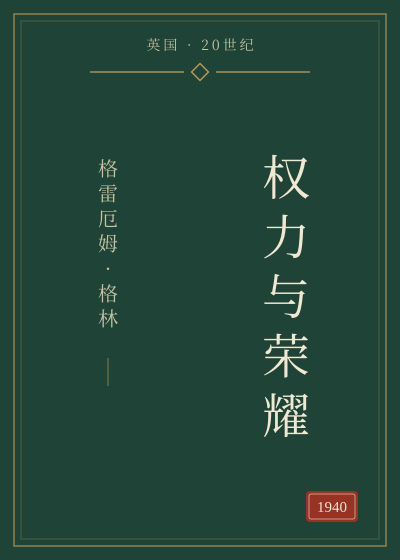
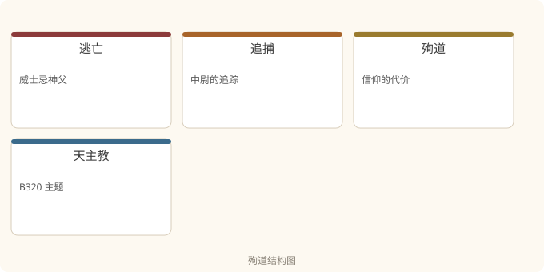

权力与荣耀
一、基本信息
| 作者 | 格雷厄姆·格林 |
|---|---|
| 成书/出版 | 1940年（Britannica B320：The Power and the Glory (1940)） Graham Greene — Encyclopaedia Britannica（百科全书） |
| 国别/地区 | 英国 |
| 时代 | 现当代 · 20世纪 |
| 体裁 | 长篇小说 |
| 语言 | 英语 |

殉道结构图（主题·结构图）
二、创作背景
Britannica（B320）：'Many of his best-known works, including The Power and the Glory (1940)……center on Roman Catholic themes'；'emphasize the presence of evil as a palpable force'。
题材（通说待核）：墨西哥革命时期一名威士忌神父的逃亡——'威士忌神父'的殉道。
三、内容脉络
无名神父在宗教迫害下逃亡——最终自愿返回送死（通说待核）。
四、主要人物表
| 人物 | 身份 | 说明 |
|---|---|---|
| 神父 | 天主教神父 | （通说待核） |
| 中尉 | 追捕者 | （通说待核） |
五、主题与艺术特点
- 信仰与迫害（通说待核）。
- '恶'作为可感的实在（B320：evil as a palpable force）。
- 殉道的含混性（通说待核）。
六、影响与评论
- Britannica：'The Power and the Glory (1940)……center on Roman Catholic themes'（B320）。
Graham Greene — Encyclopaedia Britannica（百科全书） - Britannica：格林'one of the most widely read British novelists of the 20th century'（B320 作者级）。
Graham Greene — Encyclopaedia Britannica（百科全书）
七、阅读建议
难点
- 天主教语境。
- 墨西哥革命史。
- 《权力与荣耀》（人民文学出版社/上海译文版本，通说待核）。
- 英文原版。
格林代表作。
八、待核实
- 1940年出版（Heinemann说）核对。
- 神父/中尉人名核对。
- '威士忌神父'绰号待核。
本页主要来源
格雷厄姆·格林的其他收录作品：恋情的终结